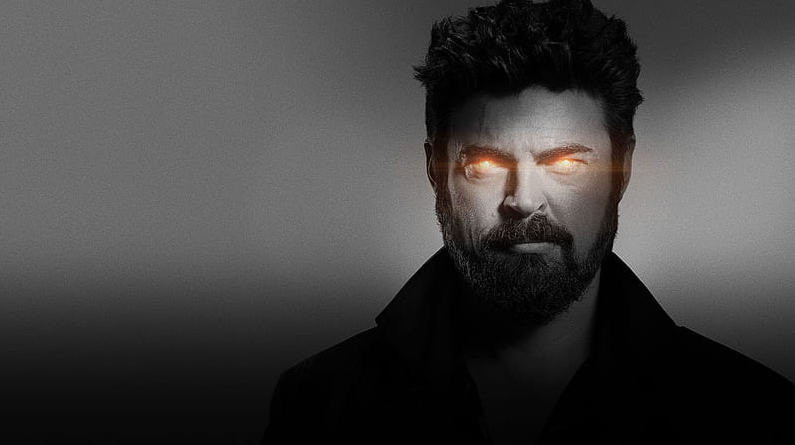
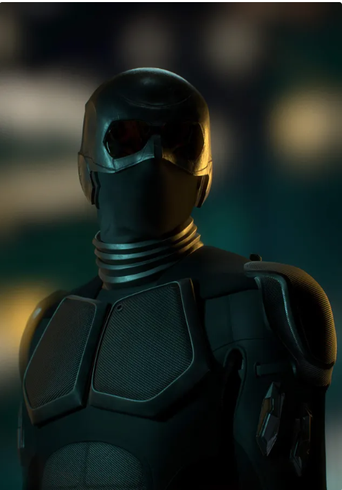

John, better known as Homelander, is the main antagonist of the Amazon series The Boys, serving as the main antagonist of both Season 1 and 4, one of the two main antagonists of Seasons 2 and 3 (alongside Stormfront in the former and Soldier Boy in the latter), a recurring antagonist of its spin-off series The Boys Presents: Diabolical and one of the two overarching antagonists (alongside Victoria Neuman) of the spin-off series Gen V. Homelander is the leader of The Seven, the strongest Supe in the world, and the archenemy of Billy Butcher and The Boys. With the face of a movie star and the powers of a god, Homelander is considered the greatest superhero alive. Not only can he fly, but he possesses super strength and super durability far beyond the capacity of other superheroes, super senses (sight, hearing, etc.), X-ray vision and laser vision. On the surface, he's affable, modest, and sincere; the ultimate boy scout, an American treasure, a God-loving patriot. But just like regular mortals, even superheroes have secrets.Throughout his childhood, John was put through painful and traumatic physical experiments and surgeries to test the limits of his abilities. Some of these tests included having his hand forced into a furnace, being boiled alive, and being forced to fight strength-enhanced Vought guards. ("One Plus One Equals Two") He was also put under long, strict, and tedious mental conditioning as he was forced to spend hours sitting in front of a projector that displayed images that were chosen to mold his personality with the American flag, Jesus Christ, and a baseball game into becoming patriotic, all-American and turn him into a symbol of the nation itself. Despite these horrible abuses from Vought scientists and his power to easily escape at any time, John was elaborately manipulated to be obedient as he deeply craved love, affection, and approval from the scientists who were the closest thing he had to a family, could not stand the thought of them being disappointed in him. Vought made the achievement by bringing the best psychologists in the world and successfully developing the protocol to carefully engineer that need.fter pulling himself out of the rubble, Homelander saw the hostage crawl out of the wreckage towards a still-alive Black Noir. To Homelander's surprise, however, Noir coldly snapped the woman's neck while comforting her. Noir then helped Homelander come up with an excuse to cover up the failure of the mission. This event led to a mutual respect and eventual genuine friendship between the two. However, Homelander's lack of control deeply hardened him and possibly added to his already unstable mind. ("One Plus One Equals Two")Homelander is soon teamed up with Noir on his first mission; stopping a group of terrorists who have taken hostages at a chemical plant. Refusing to wait for Black Noir, Homelander immediately went inside and subdued two of the terrorists, breaking one of their noses in the process. He then confronted the rest. When they refused to back down, Homelander twisted their guns. However, one of the terrorists still held a hostage at gunpoint, despite the gun not working anymore. Homelander, horribly underestimating his abilities, used his heat vision to heat up the gun, causing it to explode, killing the hostage and destroying the man's hand. When the man's associate started screaming at him, he lost his mind and clamped his hand over her mouth, accidentally ripping out her jaw. This leads the hostages screaming at him and calling him a monster, resulting in him killing everybody in a fit of rage,
William Butcher, better known as Billy, is one of the two main protagonists (alongside Hughie Campbell) of the Amazon series The Boys. He was the leader of the eponymous team of vigilantes who are bent on taking down Vought and the Seven by whatever means necessary. A former member of the British special forces turned vigilante; Billy Butcher is as charming as he is cunning. He's a force of nature, who can talk almost anyone into anything, either through a smile or brute force – or sometimes both. He's consumed by one mission in life: to destroy superheroes. But this personal vendetta is driven by his hatred for one Supe in particular: Homelander. Butcher is determined to get revenge on Homelander, no matter the cost, and he won't let anyone, or anything stand in his way. Following the revelation that Becca was alive, Butcher compromised the security of the Boys to rescue Becca and her son, Ryan. Butcher was devastated after Becca was accidentally mortally wounded by Ryan in an attempt to save her from Stormfront. Becca's final request was to keep Ryan safe from Homelander, to which Butcher begrudgingly agreed. Butcher became more aggressive after Becca's death, pushing everyone away, including Ryan. Butcher crossed a line he never imagined he would when he took Temp V, a variant of Compound V that gives you superpowers for 24 hours, so he could take the fight directly to Homelander and Vought. But doing so came with a devastating cost: he now has less than a year to live.
Benjamin, better known as Soldier Boy, is a major antagonist of the Amazon series The Boys, where he served as one of two main antagonists (alongside Homelander) of Season 3. He was America's first and greatest superhero before Homelander and the former leader of the superhero team Payback. As a young man, Soldier Boy helped good triumph over evil in World War II. However, it is not made clear how much of that is true, as The Legend claimed that his participation in the war was Vought propaganda whereas Stan Edgar actually claims the opposite by stating that he killed Germans by the dozens. With his superhero team Payback by his side, he was said to have fought for liberty and justice for all until his disappearance during a botched military operation in Nicaragua, with the cover story being that he heroically sacrificed his own life to save America from a nuclear power plant meltdown in 1984. In reality Soldier Boy was betrayed by his team for his aggressive behavior towards them and (with Vought’s approval) was sold out to the Russians, who would later conduct dozens of agonizing experiments on him over the next 3 decades. Much like Homelander, Soldier Boy was esteemed by the public but due to the news, Starlight's recent exposé about his recent actions and Vought’s slanderous lies, his fame and reputation crumbled.Benjamin, also nicknamed “Ben” was born in South Philadelphia, Pennsylvania on 1919. The official backstory of Soldier Boy by Vought was that he was born poor and learned the values of hard work, tenacity and bravery while growing up on the streets. In reality, Benjamin was born into a wealthy home under his father, a prominent industrial magnate who owned half the steel mills in the state. Despite his wealth, Ben’s father was verbally abusive and neglectful, and Ben recalls that he used to sneak sips of his father's cocktails. His father shipped him off to boarding school at a young age; not to mold him into a better person, but rather to get rid of him, leaving Ben feeling abandoned. Unfortunately, Benjamin struggled in boarding school and ultimately flunked out, causing his father to deem him a disappointment and declare him unworthy to carry his name.To make his father proud, Benjamin enlisted in the US Army during WW2 and approached the war department by using his father's contacts to volunteer among other human subjects to be experimented with Dr. Frederick Vought’s field tested Compound V. The experiment succeeded, and he became one of the first and strongest supes in the world. He gained the moniker “Soldier Boy” and became America’s first superhero, a popular sex symbol and a mascot for Vought American and the US military who fought in WW2 and reportedly lead the 116th infantry regiment in the Omaha Beach to victory. However, according to the Legend’s claims, Vought-American utilized Soldier Boy primarily for war propaganda films and publicity shoots rather than deploying him to fight the Nazis, presumably due to how much he was worth to the company and refusing to risk putting their most valuable asset in harm's way by overstepping his boundaries. For instance, his appearance in a photo-op at Normandy reportedly occurred two weeks after D-day in 1944, despite Stan Edgar’s assertions of his direct involvement in the landings. Consequently, it remains uncertain how much actual combat he experienced during the war, despite his own claims of actively participating, which could be valid given his exceptional combat skills that could also stem from the U.S military's or Vought’s superhero combat training programIn 1945 following the end of WW2, an executive order was drafted, presumably by President Harry S. Truman, to establish the date of April 28 as Soldier Boy Day as a way of honoring his heroic efforts during the war. However, Ben intervened and had the day be known as National Superhero Day as a way of honoring all superheroes instead.[1]
Earving, better known as Black Noir, was a major antagonist in the Amazon series The Boys, serving as a major antagonist in Season 1, the secondary antagonist in Season 2, and the central antagonist turned anti-hero in Season 3. He was a mute, darkly-costumed superhero and a member of The Seven. Silent, stealthy, and enigmatic, Black Noir was The Seven’s superpowered ninja. His super strength and heightened senses were matched only by his proficiency in the martial arts. Criminals ran in terror at the mere mention of his name. Little is known about this lethal warrior, other than having trained with a master sensei to become the death dealer he used to be. To the public, whatever lies behind Black Noir’s mask is a complete mystery – which only made him more terrifying. Noir lost his ability to think properly and speak after Soldier Boy violently beat him during a mission. Noir was left horrifically disfigured, rendering him with the same mental age as a 7 year old child. This damage to his brain also caused Noir to experience constant delusions of the cartoon mascots of Buster Beaver's Pizza Restaurant, whom he imagines as his best friends.Later in life, Earving landed membership on the superhero team Payback, starting his career as Black Noir. Much to his displeasure, he was forced to conceal his face by Vought American due to his race, in order to make him more marketable. One attempt to break out as an unconcealed star was to audition for the movie Beverly Hills Cop, but due to Soldier Boy's interference, he lost out to Eddie Murphy. Earving confronted his leader about this, to which Soldier Boy beat him in retaliation, much to the rest of Payback's protests. He told the bloodied Earving that he would be the only star on the team, and that if any other team member attempted to outshine him, he would kill them, fueling Earving and the team's resentment towards him.Eventually, after Soldier Boy's "death", Payback fell through as Vought's #1 superhero team, breaking up either prior or at the beginning of the new team, The Seven. During this period, Black Noir became something akin to the face of Vought by the time Homelander was introduced to the public. After the new superhero's welcome event in 1999, Black Noir witnessed Homelander and Madelyn Stillwell's conversation about him taking Homelander out if he does not follow Vought's instructions. Later, the two would be called to take care of a hostage situation at a chemical plant. Black Noir, arriving to the scene a bit after Homelander, comes across him covered in blood after losing his composure during the mission, slaughtering most of the hostages and terrorists. Homelander, believing Black Noir will turn him over to Vought, attempts to kill him, but is unable to keep up with the experienced superhero's quick reflexes. As a distraction, Black Noir ties up the last terrorist to a large fuel tank, which Homelander lasers in half, accidentally causing an explosion. The two and the remaining hostage survive, but before Homelander can murder the two to cover his failure, Black Noir snaps the hostage's neck. He then writes on a paper pad, instructing Homelander to lie to the news that he tried covering a bomb the terrorists had with his body, failing to prevent the explosion. The plan worked, gaining sympathy for the superhero newbie, securing his place at Vought, and cementing a sort of alliance between him and Black Noir.
